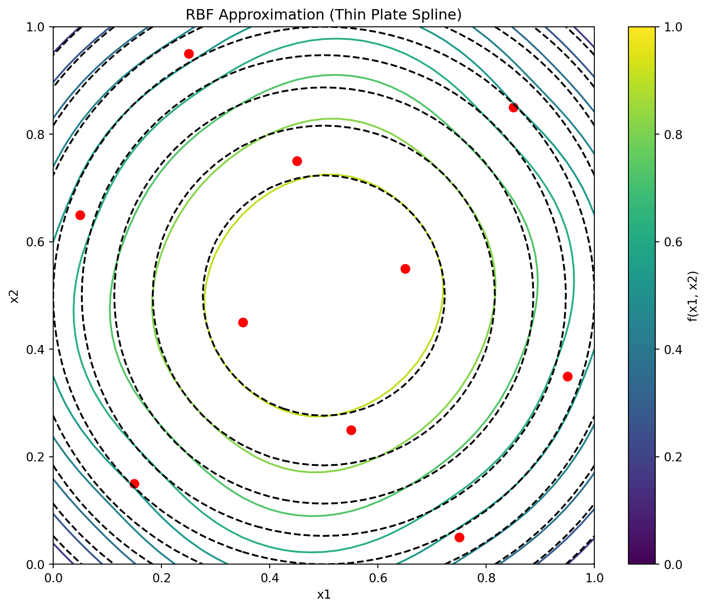

import numpy as np
from scipy.linalg import cholesky, cho_solve
import numpy.random as rnd
class Rbf:
"""Radial Basis Function model implementation.
Attributes:
X (ndarray): The sampling plan (input points).
y (ndarray): The response vector.
code (int): Type of basis function to use.
weights (ndarray, optional): The weights vector (set after fitting).
sigma (float, optional): Parameter for parametric basis functions.
Phi (ndarray, optional): The Gram matrix (set during fitting).
success (bool, optional): Flag indicating successful fitting.
"""
def __init__(self, X=None, y=None, code=3):
"""Initialize the RBF model.
Args:
X (ndarray, optional): The sampling plan.
y (ndarray, optional): The response vector.
code (int, optional): Type of basis function. Default is 3 (thin plate spline).
"""
self.X = X
self.y = y
self.code = code
self.weights = None
self.sigma = None
self.Phi = None
self.success = None
def basis(self, r, sigma=None):
"""Compute the value of the basis function.
Args:
r (float): Radius (distance)
sigma (float, optional): Parameter for parametric basis functions
Returns:
float: Value of the basis function
"""
# Use instance sigma if not provided
if sigma is None and hasattr(self, 'sigma'):
sigma = self.sigma
if self.code == 1:
# Linear function
return r
elif self.code == 2:
# Cubic
return r**3
elif self.code == 3:
# Thin plate spline
if r < 1e-200:
return 0
else:
return r**2 * np.log(r)
elif self.code == 4:
# Gaussian
return np.exp(-(r**2)/(2*sigma**2))
elif self.code == 5:
# Multi-quadric
return (r**2 + sigma**2)**0.5
elif self.code == 6:
# Inverse Multi-Quadric
return (r**2 + sigma**2)**(-0.5)
else:
raise ValueError("Invalid basis function code")
def estim_weights(self):
"""Estimates the basis function weights if sigma is known or not required.
Returns:
self: The updated model instance
"""
# Check if sigma is required but not provided
if self.code > 3 and self.sigma is None:
raise ValueError("The basis function requires a sigma parameter")
# Number of points
n = len(self.y)
# Build distance matrix
d = np.zeros((n, n))
for i in range(n):
for j in range(i+1):
d[i, j] = np.linalg.norm(self.X[i] - self.X[j])
d[j, i] = d[i, j]
# Construct the Phi (Psi) matrix
self.Phi = np.zeros((n, n))
for i in range(n):
for j in range(i+1):
self.Phi[i, j] = self.basis(d[i, j], self.sigma)
self.Phi[j, i] = self.Phi[i, j]
# Calculate weights using appropriate method
if self.code == 4 or self.code == 6:
# Use Cholesky factorization for Gaussian or inverse multiquadric
try:
L = cholesky(self.Phi, lower=True)
self.weights = cho_solve((L, True), self.y)
self.success = True
except np.linalg.LinAlgError:
print("Cholesky factorization failed.")
print("Two points may be too close together.")
self.weights = None
self.success = False
else:
# Use direct solve for other basis functions
try:
self.weights = np.linalg.solve(self.Phi, self.y)
self.success = True
except np.linalg.LinAlgError:
self.weights = None
self.success = False
return self
def fit(self):
"""Estimates the parameters of the Radial Basis Function model.
Returns:
self: The updated model instance
"""
if self.code < 4:
# Fixed basis function, only w needs estimating
self.estim_weights()
else:
# Basis function also requires a sigma, estimate first
# Save original model data
X_orig = self.X.copy()
y_orig = self.y.copy()
# Direct search between 10^-2 and 10^2
sigmas = np.logspace(-2, 2, 30)
# Number of cross-validation subsets
if len(self.X) < 6:
q = 2
elif len(self.X) < 15:
q = 3
elif len(self.X) < 50:
q = 5
else:
q = 10
# Number of sample points
n = len(self.X)
# X split into q randomly selected subsets
xs = rnd.permutation(n)
full_xs = xs.copy()
# The beginnings of the subsets...
from_idx = np.arange(0, n, n//q)
if from_idx[-1] >= n:
from_idx = from_idx[:-1]
# ...and their ends
to_idx = np.zeros_like(from_idx)
for i in range(len(from_idx) - 1):
to_idx[i] = from_idx[i+1] - 1
to_idx[-1] = n - 1
cross_val = np.zeros(len(sigmas))
# Cycling through the possible values of Sigma
for sig_index, sigma in enumerate(sigmas):
print(f"Computing cross-validation metric for Sigma={sigma:.4f}...")
cross_val[sig_index] = 0
# Model fitting to subsets of the data
for j in range(len(from_idx)):
removed = xs[from_idx[j]:to_idx[j]+1]
xs_temp = np.delete(xs, np.arange(from_idx[j], to_idx[j]+1))
# Create a temporary model for CV
temp_model = Rbf(
X=X_orig[xs_temp],
y=y_orig[xs_temp],
code=self.code
)
temp_model.sigma = sigma
# Sigma and subset chosen, now estimate w
temp_model.estim_weights()
if temp_model.weights is None:
cross_val[sig_index] = 1e20
xs = full_xs.copy()
break
# Compute vector of predictions at the removed sites
pr = np.zeros(len(removed))
for jj, idx in enumerate(removed):
pr[jj] = temp_model.predict(X_orig[idx])
# Calculate cross-validation error
cross_val[sig_index] += np.sum((y_orig[removed] - pr)**2) / len(removed)
xs = full_xs.copy()
# Now attempt Cholesky on the full set, in case the subsets could
# be fitted correctly, but the complete X could not
temp_model = Rbf(
X=X_orig,
y=y_orig,
code=self.code
)
temp_model.sigma = sigma
temp_model.estim_weights()
if temp_model.weights is None:
cross_val[sig_index] = 1e20
print("Failed to fit complete sample data.")
# Find the best sigma
min_cv_index = np.argmin(cross_val)
best_sig = sigmas[min_cv_index]
# Set the best sigma and recompute weights
print(f"Selected sigma={best_sig:.4f}")
self.sigma = best_sig
self.estim_weights()
return self
def predict(self, x):
"""Calculates the value of the Radial Basis Function surrogate model at x.
Args:
x (ndarray): Point at which to make prediction
Returns:
float: Predicted value
"""
# Calculate distances to all sample points
d = np.zeros(len(self.X))
for k in range(len(self.X)):
d[k] = np.linalg.norm(x - self.X[k])
# Calculate basis function values
phi = np.zeros(len(self.X))
for k in range(len(self.X)):
phi[k] = self.basis(d[k], self.sigma)
# Calculate prediction
y = np.dot(phi, self.weights)
return y8 Radial Basis Function Models
Note
This section is based on chapter 2.3 in Forrester, Sóbester, and Keane (2008).
8.1 Radial Basis Function Models
Scientists and engineers frequently tackle complex functions by decomposing them into a “vocabulary” of simpler, well-understood basic functions. These fundamental building blocks possess properties that make them easier to analyze mathematically and implement computationally. We explored this concept earlier with multivariable polynomials, where complex behaviors were modeled using combinations of polynomial terms.
While Fourier analysis—perhaps the most widely recognized example of this approach—excels at representing periodic phenomena through sine and cosine functions, the focus in Forrester, Sóbester, and Keane (2008) is broader. They aim to approximate arbitrary smooth, continuous functions using strategically positioned basis functions. Specifically, radial basis function (RBF) models employ symmetrical basis functions centered at selected points distributed throughout the design space. These basis functions have the unique property that their output depends only on the distance from their center point.
We will first examine interpolating RBF models, which assume noise-free data and pass exactly through all training points. This approach provides an elegant mathematical foundation before we consider more practical scenarios where data contains measurement or process noise.
8.1.1 Fitting Noise-Free Data
Let us consider the scalar valued function \(f\) observed without error, according to the sampling plan \(X = {\vec{x}^{(1)}, \vec{x}^{(2)}, \ldots, \vec{x}^{(n)}}^T\), yielding the responses \(\vec{y} = \{y^{(1)}, y^{(2)}, \ldots, y^{(n)}\}^T\).
We seek a radial basis function approximation to \(f\) of the fixed form:
\[ \hat{f}(\vec{x}) = \sum_{i=1}^{n_c} \vec{w}_i \psi(||\vec{x} - \vec{c}^{(i)}||), \tag{8.1}\] where \(\vec{w}_i\) are the weights of the \(n_c\) basis functions, \(\vec{c}^{(i)}\) are the centres of the basis functions, and \(\psi\) is a radial basis function. The notation \(||\cdot||\) denotes the Euclidean distance between two points in the design space.
8.1.1.1 Selecting Basis Functions: From Fixed to Parametric Forms
When implementing a radial basis function model, we initially have one undetermined parameter per basis function: the weight applied to each function’s output. This simple parameterization remains true when we select from several standard fixed-form basis functions, such as:
- Linear (\(\psi(r) = r\)): The simplest form, providing a response proportional to distance
- Cubic (\(\psi(r) = r^3\)): Offers stronger emphasis on points farther from the center
- Thin plate spline (\(\psi(r) = r^2 \ln r\)): Models the physical bending of a thin sheet, providing excellent smoothness properties
While these fixed basis functions are computationally efficient, they offer limited flexibility in how they generalize across the design space. For more adaptive modeling power, we can employ parametric basis functions that introduce additional tunable parameters:
- Gaussian (\(\psi(r) = e^{-r^2/(2\sigma^2)}\)): Produces bell-shaped curves with \(\sigma\) controlling the width of influence
- Multiquadric (\(\psi(r) = (r^2 + \sigma^2)^{1/2}\)): Provides broader coverage with less localized effects
- Inverse multiquadric (\(\psi(r) = (r^2 + \sigma^2)^{-1/2}\)): Offers sharp peaks near centers with asymptotic behavior
The parameter \(\sigma\) in these functions serves as a shape parameter that controls how rapidly the function’s influence decays with distance. This added flexibility enables significantly better generalization, particularly when modeling complex responses, though at the cost of a more involved parameter estimation process requiring optimization of both weights and shape parameters.
8.1.1.2 The Interpolation Condition: Elegant Solutions Through Linear Systems
A remarkable property of radial basis function models is that regardless of which basis functions we choose—parametric or fixed—determining the weights \(\vec{w}\) remains straightforward through interpolation. The core principle is elegantly simple: we require our model to exactly reproduce the observed data points:
\[ \hat{f}(\vec{x}^{(i)}) = y^{(i)}, \quad i = 1, 2, \ldots, n. \tag{8.2}\]
This constraint produces one of the most powerful aspects of RBF modeling: while the system in Equation 8.2 is linear with respect to the weights \(\vec{w}\), the resulting predictor \(\hat{f}\) can capture highly nonlinear relationships in the data. The RBF approach transforms a complex nonlinear modeling problem into a solvable linear algebra problem.
For a unique solution to exist, we require that the number of basis functions equals the number of data points (\(n_c = n\)). The standard practice, which greatly simplifies implementation, is to center each basis function at a training data point, setting \(\vec{c}^{(i)} = \vec{x}^{(i)}\) for all \(i = 1, 2, \ldots, n\). This choice allows us to express the interpolation condition as a compact matrix equation:
\[ \Psi \vec{w} = \vec{y}. \]
Here, \(\Psi\) represents the Gram matrix (also called the design matrix or kernel matrix), whose elements measure the similarity between data points:
\[ \Psi_{i,j} = \psi(||\vec{x}^{(i)} - \vec{x}^{(j)}||), \quad i, j = 1, 2, \ldots, n. \]
The solution for the weight vector becomes:
\[ \vec{w} = \Psi^{-1} \vec{y}. \]
This matrix inversion step is the computational core of the RBF model fitting process, and the numerical properties of this operation depend critically on the chosen basis function. Different basis functions produce Gram matrices with distinct conditioning properties, directly affecting both computational stability and the model’s generalization capabilities.
8.1.2 Numerical Stability Through Positive Definite Matrices
A significant advantage of Gaussian and inverse multiquadric basis functions lies in their mathematical guarantees. Vapnik (1998) demonstrated that these functions always produce symmetric positive definite Gram matrices when using strictly positive definite kernels (see Section 10.2), which is a critical property for numerical reliability. Unlike other basis functions that may lead to ill-conditioned systems, these functions ensure the existence of unique, stable solutions.
This positive definiteness enables the use of Cholesky factorization, which offers substantial computational advantages over standard matrix inversion techniques. The Cholesky approach approximately halves the computational cost (reducing from \(O(n^3)\) to roughly \(O(n^3/3)\)) while significantly improving numerical stability when handling the inevitable rounding errors in floating-point arithmetic. This robustness to numerical issues explains why Gaussian and inverse multiquadric basis functions remain the preferred choice in many practical RBF implementations.
Furthermore, the positive definiteness guarantee provides theoretical assurances about the model’s interpolation properties—ensuring that the RBF interpolant exists and is unique for any distinct set of centers. This mathematical foundation gives practitioners confidence in the method’s reliability, particularly for complex engineering applications where model stability is paramount.
The computational advantage stems from how a symmetric positive definite matrix \(\Psi\) can be efficiently decomposed into the product of an upper triangular matrix \(U\) and its transpose:
\[ \Psi = U^T U. \]
This decomposition transforms the system \[ \Psi \vec{w} = \vec{y} \] into \[ U^T U \vec{w} = \vec{y}, \] which can be solved through two simpler triangular systems:
- First solve \(U^T \vec{v} = \vec{y}\) for the intermediate vector \(\vec{v}\)
- Then solve \(U \vec{w} = \vec{v}\) for the desired weights \(\vec{w}\)
In Python implementations, this process is elegantly handled using NumPy’s or SciPy’s Cholesky decomposition functions, followed by specialized solvers that exploit the triangular structure:
from scipy.linalg import cholesky, cho_solve
# Compute the Cholesky factorization
L = cholesky(Psi, lower=True) # L is the lower triangular factor
weights = cho_solve((L, True), y) # Efficient solver for (L L^T)w = y8.1.3 Ill-Conditioning
An important numerical consideration in RBF modeling is that points positioned extremely close to each other in the input space \(X\) can lead to severe ill-conditioning of the Gram matrix (Micchelli 1986). This ill-conditioning manifests as nearly linearly dependent rows and columns in \(\Psi\), potentially causing the Cholesky factorization to fail due to numerically negative pivots.
While this problem rarely arises with initial space-filling experimental designs (such as Latin Hypercube or quasi-random sequences), it frequently emerges during sequential optimization processes that adaptively add infill points in promising regions. As these clusters of points concentrate in areas of high interest, the condition number of the Gram matrix deteriorates, jeopardizing numerical stability.
Several mitigation strategies exist: regularization through ridge-like penalties (modifying the standard RBF interpolation problem by adding a penalty term to the diagonal of the Gram matrix. This creates a literal “ridge” along the diagonal of the matrix), removing nearly coincident points, clustering, or applying more sophisticated approaches. One theoretically elegant solution involves augmenting non-conditionally positive definite basis functions with polynomial terms (Keane and Nair 2005). This technique not only improves conditioning but also ensures polynomial reproduction properties, enhancing the approximation quality for certain function classes while maintaining numerical stability.
Beyond determining \(\vec{w}\), there is, of course, the additional task of estimating any other parameters introduced via the basis functions. A typical example is the \(\sigma\) of the Gaussian basis function, usually taken to be the same for all basis functions, though a different one can be selected for each centre, as is customary in the case of the Kriging basis function, to be discussed shortly (once again, we trade additional parameter estimation complexity versus increased flexibility and, hopefully, better generalization).
8.1.4 Parameter Optimization: A Two-Level Approach
When building RBF models, we face two distinct parameter estimation challenges:
- Determining the weights (\(\vec{w}\)): These parameters ensure our model precisely reproduces the training data. For any fixed basis function configuration, we can calculate these weights directly through linear algebra as shown earlier.
- Optimizing shape parameters (like \(\sigma\) in Gaussian RBF): These parameters control how the model generalizes to new, unseen data. Unlike weights, there’s no direct formula to find their optimal values.
To address this dual challenge, we employ a nested optimization strategy (inner and outer levels):
8.1.4.1 Inner Level (\(\vec{w}\))
For each candidate value of shape parameters (e.g., \(\sigma\)), we determine the corresponding optimal weights \(\vec{w}\) by solving the linear system. The estim_weights() method implements the inner level optimization by calculating the optimal weights \(\vec{w}\) for a given shape parameter (\(\sigma\)):
def estim_weights(self):
# [...]
# Construct the Phi (Psi) matrix
self.Phi = np.zeros((n, n))
for i in range(n):
for j in range(i+1):
self.Phi[i, j] = self.basis(d[i, j], self.sigma)
self.Phi[j, i] = self.Phi[i, j]
# Calculate weights using appropriate method
if self.code == 4 or self.code == 6:
# Use Cholesky factorization for Gaussian or inverse multiquadric
try:
L = cholesky(self.Phi, lower=True)
self.weights = cho_solve((L, True), self.y)
self.success = True
except np.linalg.LinAlgError:
# Error handling...
else:
# Use direct solve for other basis functions
try:
self.weights = np.linalg.solve(self.Phi, self.y)
self.success = True
except np.linalg.LinAlgError:
# Error handling...
return selfThis method:
- Creates the Gram matrix (Phi) based on distances between points
- Solves the linear system \(\Psi\vec{w} = \vec{y}\) for weights
- Uses appropriate numerical methods based on the basis function type (Cholesky factorization or direct solve)
8.1.4.2 Outer Level (\(\sigma\))
We use cross-validation to evaluate how well the model generalizes with different shape parameter values. The outer level optimization is implemented within the fit() method, where cross-validation is used to evaluate different \(\sigma\) values:
def fit(self):
if self.code < 4:
# Fixed basis function, only w needs estimating
self.estim_weights()
else:
# Basis function requires a sigma, estimate first using cross-validation
# [...]
# Generate candidate sigma values
sigmas = np.logspace(-2, 2, 30)
# Setup cross-validation (determine number of folds)
# [...]
cross_val = np.zeros(len(sigmas))
# For each candidate sigma value
for sig_index, sigma in enumerate(sigmas):
print(f"Computing cross-validation metric for Sigma={sigma:.4f}...")
# Perform k-fold cross-validation
for j in range(len(from_idx)):
# Create and fit model on training subset
temp_model = Rbf(
X=X_orig[xs_temp],
y=y_orig[xs_temp],
code=self.code
)
temp_model.sigma = sigma
# Call inner level optimization
temp_model.estim_weights()
# Evaluate on held-out data
# [...]
# Select best sigma based on cross-validation performance
min_cv_index = np.argmin(cross_val)
best_sig = sigmas[min_cv_index]
# Use the best sigma for final model
self.sigma = best_sig
self.estim_weights() # Call inner level again with optimal sigmaThe outer level:
- Generates a range of candidate \(\sigma\) values
- For each \(\sigma\), performs k-fold cross-validation:
- Creates models on subsets of the data
- Calls the inner level method (estim_weights()) to determine weights
- Evaluates prediction quality on held-out data
- Selects the \(\sigma\) that minimizes cross-validation error
- Performs a final call to the inner level method with the optimal \(\sigma\)
This two-level approach is particularly critical for parametric basis functions (Gaussian, multiquadric, etc.), where the wrong choice of shape parameter could lead to either overfitting (too much flexibility) or underfitting (too rigid). Cross-validation provides an unbiased estimate of how well different parameter choices will perform on new data, helping us balance the trade-off between fitting the training data perfectly and generalizing well.
8.2 Python Implementation of the RBF Model
Section 8.2 shows a Python implementation of this parameter estimation process (based on a cross-validation routine), which will represent the surrogate, once its parameters have been estimated. The model building process is very simple.
Instead of using a dictionary for bookkeeping, we implement a Python class Rbf that encapsulates all the necessary data and functionality. The class stores the sampling plan \(X\) as the X attribute and the corresponding \(n\)-vector of responses \(y\) as the y attribute. The code attribute specifies the type of basis function to be used. After fitting the model, the class will also contain the estimated parameter values \(\vec{w}\) and, if a parametric basis function is used, \(\sigma\). These are stored in the weights and sigma attributes respectively.
Finally, a note on prediction error estimation. We have already indicated that the guarantee of a positive definite \(\Psi\) is one of the advantages of Gaussian radial basis functions. They also possess another desirable feature: it is relatively easy to estimate their prediction error at any \(\vec{x}\) in the design space. Additionally, the expectation function of the improvement in minimum (or maximum) function value with respect to the minimum (or maximum) known so far can also be calculated quite easily, both of these features being very useful when the optimization of \(f\) is the goal of the surrogate modelling process.
8.2.1 The Rbf Class
The Rbf class implements the Radial Basis Function model. It encapsulates all the data and methods needed for fitting the model and making predictions.
8.2.2 The dome function
The dome function is an example of a test function that can be used to evaluate the performance of the Radial Basis Function model. It is a simple mathematical function defined over a two-dimensional space.
def dome(x) -> float:
"""
Dome test function.
Args:
x (ndarray): Input vector (1D array of length 2)
Returns:
float: Function value
Examples:
dome(np.array([0.5, 0.5]))
"""
return np.sum(1 - (2*x - 1)**2) / len(x)8.2.3 Example usage
The following code demonstrates how to use the Radial Basis Function model to approximate a function. It generates a Latin Hypercube sample, computes the objective function values, estimates the model parameters, and plots the results.
def generate_rbf_data(n_samples=10, grid_points=41):
"""
Generates data for RBF visualization.
Args:
n_samples (int): Number of samples for the RBF model
grid_points (int): Number of grid points for prediction
Returns:
tuple: (rbf_model, X, Y, Z, Z_0) - Model and grid data for plotting
"""
from spotpython.utils.sampling import bestlh as best_lh
# Generate sampling plan
X_samples = best_lh(n_samples, 2, population=10, iterations=100)
# Compute objective function values
y_samples = np.zeros(len(X_samples))
for i in range(len(X_samples)):
y_samples[i] = dome(X_samples[i])
# Create and fit RBF model
rbf_model = Rbf(X=X_samples, y=y_samples, code=3) # Thin plate spline
rbf_model.fit()
# Generate grid for prediction
x = np.linspace(0, 1, grid_points)
y = np.linspace(0, 1, grid_points)
X, Y = np.meshgrid(x, y)
Z_0 = np.zeros_like(X)
Z = np.zeros_like(X)
# Evaluate model at grid points
for i in range(len(x)):
for j in range(len(y)):
Z_0[j, i] = dome(np.array([x[i], y[j]]))
Z[j, i] = rbf_model.predict(np.array([x[i], y[j]]))
return rbf_model, X, Y, Z, Z_0
def plot_rbf_results(rbf_model, X, Y, Z, Z_0=None, n_contours=10):
"""
Plots RBF approximation results.
Args:
rbf_model (Rbf): Fitted RBF model
X (ndarray): Grid X-coordinates
Y (ndarray): Grid Y-coordinates
Z (ndarray): RBF model predictions
Z_0 (ndarray, optional): True function values for comparison
n_contours (int): Number of contour levels to plot
"""
import matplotlib.pyplot as plt
plt.figure(figsize=(10, 8))
# Plot the contour
contour = plt.contour(X, Y, Z, n_contours)
if Z_0 is not None:
contour_0 = plt.contour(X, Y, Z_0, n_contours, colors='k', linestyles='dashed')
# Plot the sample points
plt.scatter(rbf_model.X[:, 0], rbf_model.X[:, 1],
c='r', marker='o', s=50)
plt.title('RBF Approximation (Thin Plate Spline)')
plt.xlabel('x1')
plt.ylabel('x2')
plt.colorbar(label='f(x1, x2)')
plt.show()Figure 8.1 shows the contour plots of the underlying function \(f(x_1, x_2) = 0.5[-(2x_1-1)^2-(2x_2-1)^2]\) and its thin plate spline radial basis function approximation, along with the 10 points of a Morris-Mitchell optimal Latin hypercube sampling plan (obtained via best_lh()).
rbf_model, X, Y, Z, Z_0 = generate_rbf_data(n_samples=10, grid_points=41)
plot_rbf_results(rbf_model, X, Y, Z, Z_0)

8.2.4 The Connection Between RBF Models and Neural Networks
Radial basis function models share a profound architectural similarity with artificial neural networks, specifically with what’s known as RBF networks. This connection provides valuable intuition about how RBF models function. A radial basis function model can be viewed as a specialized neural network with the following structure:
- Input Layer: Receives the feature vector \(\vec{x}\)
- Hidden Layer: Contains neurons (basis functions) that compute radial distances
- Output Layer: Produces a weighted sum of the hidden unit activations
Unlike traditional neural networks that use dot products followed by nonlinear activation functions, RBF networks measure the distance between inputs and learned center points. This distance is then transformed by the radial basis function.
Mathematically, the equivalence between RBF models and RBF networks can be expressed as follows:
The RBF model equation:
\[ \hat{f}(\vec{x}) = \sum_{i=1}^{n_c} w_i \psi(||\vec{x} - \vec{c}^{(i)}||) \]
directly maps to the following neural network components:
- \(\vec{x}\): Input vector
- \(\vec{c}^{(i)}\): Center vectors for each hidden neuron
- \(\psi(\cdot)\): Activation function (Gaussian, inverse multiquadric, etc.)
- \(w_i\): Output weights
- \(\hat{f}(\vec{x})\): Network output
Example 8.1 (Comparison of RBF Networks and Traditional Neural Networks) Consider approximating a simple 1D function \(f(x) = \sin(2\pi x)\) over the interval \([0,1]\):
The neral network approach would use multiple layers with neurons computing \(\sigma(w \cdot x + b)\). It would require a large number of neurons and layers to capture the sine wave’s complexity. The network would learn both weights and biases, making it less interpretable.
The RBF network approach, on the other hand, places basis functions at strategic points (e.g., 5 evenly spaced centers). Each neuron computes \(\psi(||x - c_i||)\) (e.g., using Gaussian RBF). The output layer combines these values with learned weights. If we place Gaussian RBFs with \(\sigma=0.15\) at \({0.1, 0.3, 0.5, 0.7, 0.9}\), each neuron responds strongly when the input is close to its center and weakly otherwise. The network can then learn weights that, when multiplied by these response patterns and summed, closely approximate the sine function.
This locality property gives RBF networks a notable advantage: they offer more interpretable internal representations and often require fewer neurons for certain types of function approximation compared to traditional multilayer perceptrons.
The key insight is that while standard neural networks create complex decision boundaries through compositions of hyperplanes, RBF networks directly model functions using a set of overlapping “bumps” positioned strategically in the input space.
8.3 Radial Basis Function Models for Noisy Data
When the responses \(\vec{y} = {y^{(1)}, y^{(2)}, \ldots, y^{(n)}}^T\) contain measurement or simulation noise, the standard RBF interpolation approach can lead to overfitting—the model captures both the underlying function and the random noise. This compromises generalization performance on new data points. Two principal strategies address this challenge:
8.3.1 Ridge Regularization Approach
The most straightforward solution involves introducing regularization through the parameter \(\lambda\) (Poggio and Girosi 1990). This is implemented by adding \(\lambda\) to the diagonal elements of the Gram matrix, creating a “ridge” that improves numerical stability. Mathematically, the weights are determined by:
\[ \vec{w} = (\Phi + \lambda I)^{-1} \vec{y}, \]
where \(I\) is an \(n \times n\) identity matrix. This regularized solution balances two competing objectives:
- fitting the training data accurately versus
- keeping the magnitude of weights controlled to prevent overfitting.
Theoretically, optimal performance is achieved when \(\lambda\) equals the variance of the noise in the response data \(\vec{y}\) (Keane and Nair 2005). Since this information is rarely available in practice, \(\lambda\) is typically estimated through cross-validation alongside other model parameters.
8.3.2 Reduced Basis Approach
An alternative strategy involves reducing \(m\), the number of basis functions. This might result in a non-square \(\Phi\) matrix. With a non-square \(\Phi\) matrix, the weights are found through least squares minimization:
\[ \vec{w} = (\Phi^T\Phi)^{-1}\Phi^T\vec{y} \]
This approach introduces an important design decision: which subset of points should serve as basis function centers? Several selection strategies exist:
- Clustering methods that identify representative points
- Greedy algorithms that sequentially select influential centers
- Support vector regression techniques (discussed elsewhere in the literature)
Additional parameters such as the width parameter \(\sigma\) in Gaussian bases can be optimized through cross-validation to minimize generalization error estimates.
The ridge regularization and reduced basis approaches can be combined, allowing for a flexible modeling framework, though at the cost of a more complex parameter estimation process. This hybrid approach often yields superior results for highly noisy datasets or when the underlying function has varying complexity across the input space.
The broader challenge of building accurate models from noisy observations is examined comprehensively in the context of Kriging models, which provide a statistical framework for explicitly modeling both the underlying function and the noise process.
8.4 Jupyter Notebook
Note
- The Jupyter-Notebook of this lecture is available on GitHub in the Hyperparameter-Tuning-Cookbook Repository